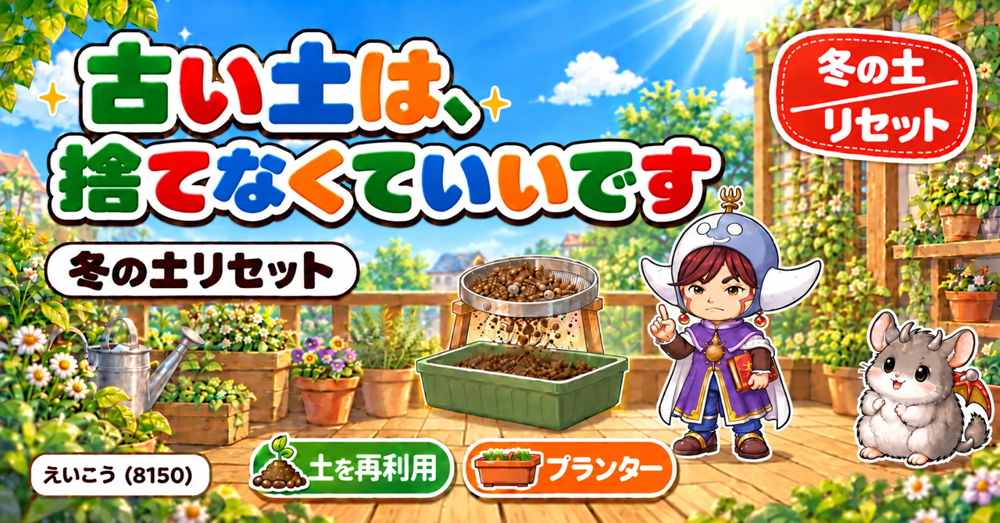
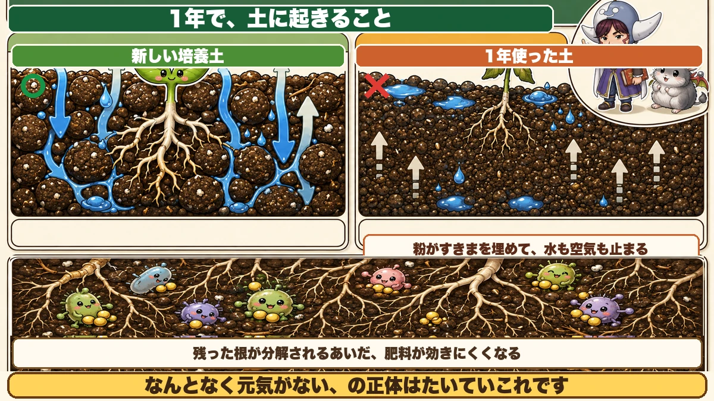
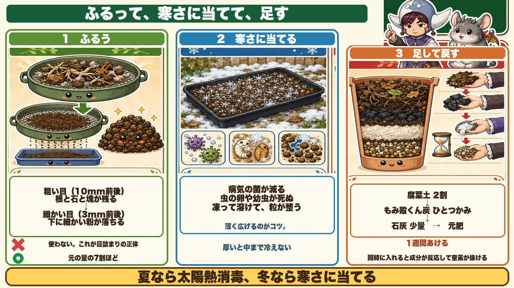
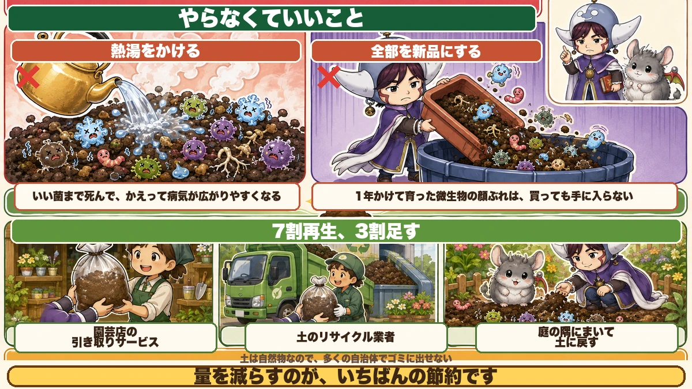
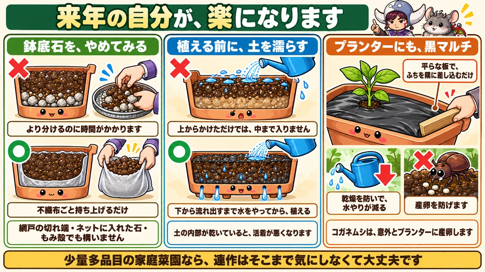

プランターの古い土を再生する方法｜再生材・資材・米ぬか発酵・太陽熱の4つ

どうも、8150（えいこう）です🌱 家庭菜園歴8年、理科の教員免許を持っていて、有機・無農薬で野菜を育てています。
📖 この記事の目次
この記事で分かること
- 野菜を育て終わったプランターの土は、つぶれて水はけが悪くなったり、栄養が減ったり、土の中の小さな生きもの（微生物）があまり働いていない状態になったりしています。
- 古い土は、まず中身を出して、根や虫、ごみを取り除きます。細い根まで全部取るかどうかは、説明が分かれています。
- 再生のやり方は、大きく4つあります。市販の再生材を混ぜる、腐葉土や肥料などの資材を量って足す、米ぬかで土ごと発酵させる、夏の太陽熱を使う、です。
- どのやり方も、全部をやる必要はありません。土の状態と、次に植えるまでの時間で選びます。
- 病気が出た株を育てた土は、再生せずに使わないほうがよい場合があります。
- 植えるときは、土を湿らせてから植え、水のやりすぎによる根腐れに気をつけます。
プランターで野菜を育て終わったあと、残った土をどうしていますか？ そのまま次の野菜を植えたら、なんだか育ちが悪かった、という経験のある方も多いと思います。かといって、毎回新しい土を買うのはお金もかかりますし、古い土を捨てるのも意外と大変ですよね。
古い土は、手を入れてあげれば、また使えるようになります。難しい作業は必要ありません。この記事では、プランターの古い土を再生する方法を、育ちが悪くなる理由から、具体的なやり方、使わないほうがいい土、植えるときのコツまで、順番に書いていきます。説明が分かれているところは、両方の考え方を並べておきますね。

早見：古い土の再生の基本（ひと目で分かる目安）
まずやること
- プランターから土を出す
- 根、虫、雑草、ごみを取り除く
- 鉢底石を分けておく
再生の4つのやり方
- 市販の再生材を混ぜる：いちばん手軽。混ぜてすぐ使う人もいる
- 資材を量って足す：腐葉土、石灰、肥料、パーライトなどを量って混ぜる
- 米ぬかで発酵させる：米ぬかと砂糖を混ぜて、袋の中で発酵させる
- 太陽熱を使う：夏に、湿らせた土を袋やビニールで包んで日に当てる
再生しないほうがいい土
- ウイルスなどの病気が出た株を育てた土
- 病気や虫の被害がひどかった土
なぜ、古い土では育ちが悪くなるのか
土がつぶれて、水はけが悪くなる
プランターの土は、使っているうちに、水やりのたびに少しずつ押し固められて、つぶれていきます。しばらく放っておいた土は、つぶれて水はけが悪くなっている、と説明されます。
水はけが悪くなると、水をやっても土の中に水がたまりやすくなります。
栄養が減っている
野菜を育てたあとの土は、野菜に栄養を吸い取られて、やせた状態になっています。じゃがいもを袋で育てたあとの土が、根だらけで、栄養が吸い取られてやせた土になっていた、という例もあります。
微生物が、あまり働いていない
野菜を育てていない古い土では、土の中の微生物がほとんど活動していない、という説明もあります。微生物は、土の中で有機物を分解して、野菜が吸える栄養に変えたり、土をふかふかにしたりする役目をしています。
根腐れが起きやすくなる
プランター栽培で枯れる原因として、根腐れという症状がよくある、と説明されます。毎日のように水をやっていると、根がいつも水におおわれて、おぼれているような状態になってしまうんです。
根腐れが進むと、次のような症状が出てくる、と説明されます。
- 水やりのあと、土がなかなか乾かない
- 水がなかなかしみこんでいかない
- 葉の色が変わり、株が弱ってくる
- 根が黒っぽく変色している
- 葉が黄色くなってくる
水はけの悪くなった古い土は、根腐れを起こしやすくなります。古い土をそのまま使うと育ちが悪くなるのは、こうしたことが重なっているから、と考えられます。

まずやること：中身を出して、分ける
手順1：プランターから土を出す
プランターをひっくり返して、土を全部出します。土が乾いているほうが、ほぐれやすく、作業が楽になります。雨のあとなど土が湿っているときは、少し乾かしてから作業するとよいでしょう。ブルーシートや新聞紙、大きめの袋の上に出すと、作業がしやすくなります。
手順2：根、虫、雑草、ごみを取り除く
土を広げながら、残っている根や雑草、虫を取り除いていきます。土の中に、白くて丸まった虫（コガネムシの幼虫など）が隠れていることがあります。見つけたら、野菜の根を食べてしまうので、必ず取り除きましょう。ビニールやプラスチックなどのごみも、分けておきます。
細い根まで全部取るか
細い根を全部取り除く必要があるかどうかは、説明が分かれています。
- 袋で育てたあとの、根だらけになった土では、根を丁寧に取り除いてから再生する、という例
- 畑の片づけでは、細い根まで全部取る必要はない、という説明
太い根や、かたまりになった根は取り除き、細かい根は神経質にならなくてもよい、と考えておくのが現実的だと思います。
手順3：鉢底石を分ける
鉢底石が土に混ざっていたら、目の粗いふるいなどで分けておきます。鉢底石は、洗って乾かせば、また使えます。
手順4：土の状態を見ておく
根やごみを取り除いたら、再生のやり方を選ぶ前に、土の状態を見ておきましょう。
- 手で握ってみる：固くかたまって崩れないなら、つぶれて水はけが悪くなっている
- 水をかけてみる：なかなかしみこまないなら、水はけが悪くなっている
- においをかぐ：いやなにおいがするなら、水が多すぎて腐りかけている
- 前に育てた野菜を思い出す：病気や虫の被害がひどくなかったか
この結果で、資材を足してふかふかにするのか、太陽熱で処理するのか、使うのをやめるのかを決めます。
再生のやり方1：市販の再生材を混ぜる
いちばん手軽な方法
ホームセンターなどでは、古い土を再生するための資材（再生材）が売られています。堆肥や肥料、土をふかふかにする材料などが、あらかじめ混ぜてあるものが多いです。古い土に再生材を均等に混ぜるだけなので、いちばん手軽な方法です。
混ぜて、すぐに使う人も
再生材を混ぜたら、天日に干す工程を省いて、そのままプランターに戻してすぐに栽培している、という人もいます。それで問題や影響はほとんどない、という説明です。
使う量は、袋の説明で
再生材の使う量は、製品によって違います。袋に書いてある量を守ってください。また、病気が出た土に再生材を混ぜれば、病気の心配がなくなる、というわけではありません。
再生のやり方2：資材を量って足す
何を足すか
古い土に、足りなくなったものを、資材で補っていく方法もあります。よく使われるのは、次のような資材です。
- 腐葉土：土をふかふかにして、水はけと水持ちをよくする
- 石灰：酸性に傾いた土の酸度を整える
- 有機の肥料：栄養を補う
- パーライト、バーミキュライト：水はけや通気性をよくする
量の例
古い土1リットルに対して、石灰15cc、有機の肥料15cc、パーライト15ccくらいを混ぜる、という例が紹介されています。腐葉土なども合わせて混ぜ、水を加えてしばらく置いてから使う、という手順です。
ただし、これは1人の方のやり方で、量は目安です。石灰は、土の酸度を測ってから入れるかどうかを決めるのが確実です。
混ぜたら、2週間ほど寝かせる
資材を混ぜたら、すぐに使わずに、2週間ほど寝かせてから使う、という説明があります。肥料や石灰が土になじみ、微生物が働きはじめるのを待つためです。
寝かせたあとに酸度を測ってみて、石灰を入れすぎてアルカリ性に傾いていた場合は、酸性の鹿沼土（かぬまつち）を足して調整する、という方法も紹介されています。ただし、入れすぎを完全に元に戻せるわけではないので、石灰は少なめから入れましょう。
乾かしてから混ぜる
資材を混ぜる前に、古い土を段ボールや新聞紙の上に薄く広げて、しっかり乾かしてから作業する、という例もあります。乾いた土はほぐれやすく、根やごみも取り除きやすくなります。
再生のやり方3：米ぬかで発酵させる
土ごと発酵させる
古い土に、米ぬかと砂糖を混ぜて、袋の中で発酵させる、という方法も紹介されています。米ぬかの栄養と砂糖をえさに、微生物を一気に増やして、土を元気にするやり方です。
手順の例
- 古い土3リットルに、米ぬか1リットル、砂糖100ccくらいを入れる
- 水を加える前に、しっかり混ぜる
- 水を加えて、手で団子を作り、押すと崩れるくらいの湿り気にする
- 空気が通る袋（土のう袋など）や、黒い袋に入れて置く
- 発酵して熱が出てくる。冷めたら、土を足して、しばらく置いてから使う
肥料を足す場合は、作物に合わせて入れる、という説明です。量の多い仕込みでは、目分量で、砂糖を500gくらい入れた例もあります。
袋は、日の当たらない暖かい場所に
米ぬかで発酵させる袋は、透明ではない、黒いビニール袋などがよい、と説明されます。直射日光を避けて、暖かいところに置いておきます。袋の口は、空気が少し入るくらいにしておきます。
温度が上がる
発酵が進むと、袋の中の温度が上がります。実際に温度を測って、経過を確かめている例もあります。熱いうちはまだ発酵の途中なので、すぐには植えず、冷めてから使います。
仕込んでから数日で、袋を開けると湯気が上がり、中がほかほかと温かくなっていた、という例があります。大きな量で仕込んだ例では、温度計を差しこむと50度台後半まで上がっていた、という記録もあります。
この方法は、使い終わったらまた同じことをくり返して、何度でも再生できる、と説明されています。
再生のやり方4：太陽熱を使う
夏の暑さを利用する
夏の強い日差しを利用して、土の中の温度を上げ、病原菌や虫、雑草のタネを減らす方法があります。湿らせた土を、透明のビニール袋やシートで包んで、日当たりのよい場所に置きます。
太陽熱の手順
- 土が乾いていると効果が薄くなるので、まず水をやって湿らせる
- 透明のビニールで、すき間がないように包む（畑なら土の上をおおう）
- すき間から空気が入って熱が逃げないように、まわりを土でしっかり押さえる
- 畑で行う場合、土がふわふわと浮いたままだと乾きやすいので、踏んで固めておく
- 日当たりのよい場所で、決めた日数そのままにしておく
天気が悪くて温度が上がらない日が続いたら、日数を長めにとります。
かかる日数
かかる日数は、説明によってかなり違います。
- 2週間程度
- 夏なら1週間、ふつうは3週間
- 最低2週間、できれば1か月
- 最短でも1か月以上（涼しい地域は1か月半）
- 雑草のタネなら2〜3週間、病原菌なら3〜4週間
- 土の温度を55〜60度以上に保てるなら2〜3週間
気温や天気によって、土の温度の上がり方が違うからです。
黒い袋で1か月置く方法も
夏に、黒い袋に古い土を入れて、1か月ほど置いておく、という方法もあります。この場合、袋の中が60度を超えないと効果がない、と説明されます。
急ぐときは、熱湯をかける方法も
残渣堆肥（野菜の残りから作った堆肥）を急いで使いたいときに、ふるいにかけた土をバケツなどに入れ、60度以上の熱湯をかけてから乾かす、という方法も紹介されています。少量の土なら、手軽にできる方法です。やけどには十分気をつけてください。
全部のプランターでやる必要はない
太陽熱を使う方法は、病気や虫の被害が多かった土で考える方法です。被害が多発した場合に検討して、状況を見て判断する、という説明があります。消毒の期間を守るために、次の植えつけが遅れてしまうなら、無理に続けなくてもよい、という説明もあります。
やらなくていいこと
ふるいにかけすぎない
古い土をきれいにしようとして、細かいふるいで何度もふるって、さらさらの土にする方もいると思います。でも、ふるいすぎてさらさらになった土は、かえってよくない、と説明されます。
さらさらの土は、雨上がりなどに固まりやすく、土の中の酸素が足りなくなります。また、小石や枝、葉などがまったく含まれない土は、水はけがよくなりすぎて、肥料や水を保つ力が弱くなる、という説明です。表面の部分をふるうのはよいけれど、やりすぎないように、という考え方です。
小石や枝を、神経質に取り除かない
細い根や小石、小さな枝などを、全部きれいに取り除こうと頑張る必要はない、とも説明されます。大きなごみや虫、太い根を取り除けば十分です。
毎回、太陽熱をかけなくてよい
病気や虫の被害がなかった土なら、毎回太陽熱で消毒する必要はありません。再生材や資材を混ぜて、そのまま使っている人もいます。
野菜の残りで作った堆肥を使うとき
ふるいで異物を取り除く
畑のすみの残渣置き場で、野菜の残りから堆肥を作っている方もいると思います。この残渣堆肥をプランターの土に混ぜて使うのも、古い土を元気にするよい方法です。
ただし、残渣置き場から出したものをそのまま使うのではなく、ふるいにかけて、分解しきれなかった太い根や石ころ、ビニールやプラスチックなどを取り除いてから使いましょう、と説明されます。
コガネムシの幼虫は、取り除く
残渣堆肥の中には、コガネムシやカナブンの幼虫が混ざっていることがあります。残渣置き場の中では、コガネムシの幼虫が野菜の根や葉を食べることで、分解が早く進む、というよい面もある、と説明されます。
でも、プランターの土に入れてしまうと、今度は野菜の根を食べてしまいます。ふるいにかけたときに見つかった幼虫は、必ず取り除いてから使ってください。
4つのやり方の選び方
どのやり方を選べばよいか、迷ったときの目安です。
- すぐに次の野菜を植えたい：市販の再生材
- 中身を自分で調整したい、2週間ほど待てる：資材を量って足す
- 土の中の微生物を増やして元気にしたい、暖かい時期：米ぬかで発酵
- 病気や虫の被害が多かった、夏で時間がある：太陽熱
どれか1つでもかまいませんし、組み合わせてもかまいません。たとえば、夏に太陽熱で処理したあと、腐葉土や再生材を混ぜて微生物を増やしてから使う、という流れも考えられます。

再生しないほうがいい土
ウイルスなどの病気が出た土
ウイルスなどの病気が出た株を育てた土や、その株の残りを捨てた堆肥は、使わないほうがよい、と説明されます。病気によっては、土から次の野菜に移ってしまうことがあるからです。
被害がひどかった土
病気や虫の被害がひどかった土を、何も振り返らずに次の野菜に使うのはやめましょう、という警告もあります。どんな病気や虫が出たのかを確かめてから、再生するか、使うのをやめるかを決めてください。
病気の土と、元気な土を混ぜない
病気が出た鉢の土と、元気だった鉢の土を混ぜれば薄まって大丈夫、というわけではありません。病気が出た鉢の土は、分けておきましょう。
生の野菜の残りを混ぜない
生の野菜の残りを土にたくさん混ぜると、分解がうまく進まずに腐ったり、ガスやにおいが出たりすることがあります。混ぜるなら、乾かしてから少量にしましょう。
それでも捨てたいとき
土は、ごみに出せないことが多い
土は、家庭のごみとして捨てられない地域が多い、と説明されます。ホームセンターに回収の持ちこみができる場合もありますが、運ぶのも大変です。
捨て方は、住んでいる自治体や、お店によって決まりが違います。捨てる前に、自治体のホームページなどで確かめてください。こう考えると、手を入れて再生して使うほうが、負担が少ないこともあります。

再生した土に植えるときのコツ
鉢底石は、ネットに入れておく
鉢底石を、ネットに入れてからプランターの底に敷いておく方法があります。次に土を再生するとき、鉢底石と土を分けるのがとても楽になります。不織布や、網戸の切れ端を底に敷く例もあります。
土を湿らせてから植える
苗を植える前に、プランターの底から水が流れ出すまで、土にしっかり水を与えておきます。苗を植えてから水をやると、うまく吸収できないことがあるので、先に土を完全に湿らせておくほうがよい、と説明されます。植え穴に水を入れて、水が引いてから苗を植える、という手順も紹介されています。
鉢底石の代わりに、不織布を敷く
底にすき間（スリット）のあるプランターを使う場合、土が流れ出さないように鉢底石を使うこともできますが、鉢底石は再利用のときに分けるのがとても面倒です。そこで、プランターの中に不織布を敷いてから土を入れる方法がすすめられています。土が流れ出さず、次に土を出すときも楽になります。
プランターの土にも、黒マルチを
プランターの土の表面に、黒いマルチを敷く方法もあります。土の乾燥を防いで、水やりの管理が楽になります。
水のやりすぎに気をつける
植えたあとは、土の表面が乾いてから水をやるのが基本です。毎日決まって水をやるのではなく、土の乾き具合を見てから水をやりましょう。底面給水のプランターや、受け皿に水がたまったままになっていると、根がいつも水につかって、根腐れの原因になります。
マルチで、虫の産卵を防ぐ
プランターの土の表面をマルチでおおう方法も紹介されています。土の乾燥を防ぐだけでなく、虫が土に卵を産みつけるのを防ぐ効果も期待されています。
プランターの土の1年の回し方（例）
古い土の再生を、1年の流れの中にどう組みこむかの例です。育てる野菜や地域によって変わるので、目安として読んでください。
春から夏の野菜が終わったら（秋）
夏野菜を片づけたら、土を出して根や虫を取り除きます。病気が出ていなければ、再生材や腐葉土、肥料を混ぜて、秋冬の野菜を植えます。夏の暑いうちなら、太陽熱を使う方法もできます。
秋から冬の野菜が終わったら（春）
冬越しした野菜を片づけたら、また土を出して、同じように再生します。冬のあいだに乾かして袋に入れておいた土があれば、ここで資材を混ぜて使います。米ぬかで発酵させるなら、暖かくなってきた春が向いています。
病気が出た年は
病気が出た鉢の土は、ほかの土と分けておきます。夏まで待って太陽熱で処理するか、使うのをやめるかを決めます。
失敗の見分け方
再生した土で、苗の育ちが悪い
肥料が足りていないか、逆に発酵や肥料の分解が終わっていない土に植えた可能性があります。米ぬかや肥料を混ぜた土は、熱が冷めて、においが落ち着いてから植えましょう。
水をやっても、なかなかしみこまない
土がつぶれて、水はけが悪くなっている可能性があります。腐葉土やパーライトなどを足して、土をふかふかにしてあげてください。
植えたあと、根元から白い虫が出てきた
コガネムシの幼虫などが、土に残っていた可能性があります。土を出して、虫を取り除いてください。再生の作業のときに、虫をしっかり探しておくことが大切です。
袋の中の土から、いやなにおいがする
水分が多すぎて、空気が足りない状態で腐っている可能性があります。袋から出して広げ、乾かしてから、もう一度やり直してください。団子を押すと崩れるくらいの湿り気が目安です。
米ぬかを入れた袋に、虫が寄ってきた
米ぬかは、虫を呼びやすい材料です。袋の口がしっかり閉じていなかったか、米ぬかが表面に出ていた可能性があります。米ぬかは土としっかり混ぜて、袋の口は虫が入らないように閉じておきましょう。
説明が分かれていること
太陽熱で、何が減るのか
- 温度が上がれば、線虫や細菌、虫の卵、幼虫などが全部死滅する、という広い説明
- 効果があるのはカビの仲間の病原菌で、細菌やウイルスには効果がない、という限られた説明
「病原菌が全部いなくなる」とは考えないほうが安心です。
太陽熱のときに、肥料や米ぬかを入れるか
- 肥料を入れて発酵させ、酸素を少なくすることが大切、という説明
- 家庭菜園なら水だけでよい、という説明
太陽熱のあとに耕すか
- 消毒できていない下の土を混ぜないように、耕さない、という説明
- 消毒ではなく土づくりが目的なら、あとで畝を作る考え方でよい、という説明
微生物は減るのか、増えるのか
- 太陽熱で、よい微生物も減るが、早く活動を再開する、という説明
- 深さや温度によって、むしろ微生物の活動が促される、という説明
透明の袋か、黒い袋か
- 太陽熱で消毒するなら透明
- 米ぬかで発酵させるなら、空気が通る袋や黒い袋
- 分解を進めるのが目的なら、黒でも効果がある、という説明
目的によって、使う袋が違います。
同じ土で、同じ仲間の野菜を育ててよいか
- 有機・無農薬で、少しずついろいろな野菜を育てていれば、連作障害に困ったことは一度もない、という長年の経験
- じゃがいものあとにナス科の野菜を続けるのは避けたほうがよい。どうしても続けるなら、太陽熱などで土を一度リセットする、という説明
- オクラのあとの土では、にんじんや大根、ごぼうなどの根菜は、線虫の影響を受けやすいので向かない、という説明
育てる野菜の組み合わせや、土の状態によって変わります。プランターでは、違う仲間の野菜を順番に育てるのが無難です。
よくある質問
Q. 古い土は、何回くらい再生して使えますか？
A. 何回まで使えるという決まりはありません。使うたびに、水はけや土のやわらかさ、野菜の育ち方を見て判断してください。病気が出たり、どうしても育ちが悪くなったりしたら、新しい土に替えることも考えましょう。
Q. すぐに次の野菜を植えたいです
A. いちばん早いのは、市販の再生材を混ぜる方法です。混ぜてすぐに使っている人もいます。米ぬかで発酵させる方法や、太陽熱を使う方法は、時間がかかります。
Q. 冬でも土の再生はできますか？
A. 太陽熱を使う方法は、日差しの強い夏向きです。冬は、根やごみを取り除いて、乾かして袋に入れて保管しておき、春に再生材や資材を混ぜて使う、という流れが考えられます。米ぬかの発酵も、気温が低いと進みにくくなります。
Q. 古い土に、石灰は入れたほうがいいですか？
A. 野菜を育て続けた土は、酸性に傾いていることがあります。ただし、石灰を入れすぎると、アルカリ性に傾きすぎてしまいます。土の酸度を測ってから、必要なときだけ入れるのが確実です。
Q. 同じ野菜を、同じ土で続けて育ててもいいですか？
A. 同じ仲間の野菜を同じ土で続けて育てると、育ちが悪くなる「連作障害」が出ることがあります。プランターの場合も、トマトのあとにまたトマト、のような植え方は避けて、違う仲間の野菜を植えるほうが安心です。
Q. 再生した土は、どうやって保管すればいいですか？
A. 袋に入れて、雨の当たらない場所に置いておきます。袋の口は軽く閉じておき、虫が入らないようにしましょう。使う前に、においや湿り気を確かめてください。
Q. 再生材と、資材を足す方法は、どちらがいいですか？
A. 手軽さなら再生材、自分で中身を調整したいなら資材を足す方法です。どちらでも、土をほぐして、根やごみを取り除くところは同じです。初めてなら、再生材から試してみるのがおすすめです。
Q. 米ぬかの代わりに、ほかのものは使えますか？
A. 米ぬかの代わりに、発酵を助ける資材を使う方法もあります。ただし、量や水分の加減は、方法によって違います。米ぬかは手に入りやすく、紹介されている例も多いので、まずは米ぬかで試してみるのがよいと思います。
Q. 再生した土を使い続けると、どうなりますか？
A. 古い土を再生しながら使い続けていくと、土がどんどん肥えていき、野菜の栽培もどんどん簡単になっていく、という考え方があります。毎回新しい土を買うより、手をかけて育てた土のほうが、野菜がよく育つようになることもあります。
Q. 熱湯をかけると、よい微生物も死んでしまいませんか？
A. 熱湯や太陽熱で処理すると、病原菌や虫と一緒に、よい微生物も減ると考えられます。ただし、太陽熱のあとは、よい微生物のほうが早く活動を再開する、という説明もあります。処理したあとに腐葉土や堆肥を混ぜて、微生物を増やしてあげるとよいでしょう。
Q. 使わなくなった土を、庭にまいてもいいですか？
A. 病気が出た土を庭に戻してよい、という根拠はありません。病気や虫の心配がない土でも、庭にまいてよいかどうかは、住まいの決まりや、まく場所によって違います。迷うなら、再生して使うか、自治体の決まりに従って処分してください。
Q. 古い土と、新しい培養土を混ぜて使ってもいいですか？
A. 古い土に新しい培養土を混ぜて使う方法もあります。古い土だけでは栄養やふかふかさが足りないときに、手軽に補えます。ただし、病気が出た土を新しい土で薄めれば大丈夫、というわけではないので、病気の出た土は混ぜないようにしましょう。
Q. 鉢底石は、毎回洗ったほうがいいですか？
A. 土や根が絡まっているなら、水で洗って乾かしてから使うと安心です。ネットに入れておけば、取り出して洗うのも簡単です。病気が出た鉢の鉢底石は、ほかの鉢と分けておきましょう。
Q. 再生した土は、どんな野菜にも使えますか？
A. 基本的には使えますが、前に育てた野菜と同じ仲間の野菜は避けるのが無難です。たとえば、トマトを育てた土なら、次は葉物や豆など、違う仲間の野菜を植えるとよいでしょう。
学ぶ🔬 土が「ふかふか」になるしくみ
ここからは、土が元気になるしくみについて、少しだけ深く書いておきます。読み飛ばしても大丈夫です。
「ふかふか」と「さらさら」は違う
よい土は「ふかふか」と言われます。これは、ただ粒が細かく「さらさら」している土とは違います。
ふかふかの土をよく見ると、細かい粒がくっつきあって、小さな塊（だんご）になっています。このような土のつくりを、団粒構造（だんりゅうこうぞう）と呼びます。塊と塊のあいだには大きなすき間があり、塊の中には小さなすき間があります。
水はけと水持ちが両立する
大きなすき間は、余分な水を下に流して、空気を通します。塊の中の小さなすき間は、水をたくわえます。だから、団粒構造の土は、水はけがよいのに、水持ちもよい、という一見むずかしい条件を両立できるんです。
使い古した土は、水やりで押し固められて、この塊がつぶれていきます。すき間がなくなると、水がしみこみにくく、空気も通りにくくなります。
団粒は、少しずつ作られる
団粒構造は、急に作ることは難しい、と説明されます。腐葉土や堆肥などの有機物を入れて、微生物がそれを分解するうちに、少しずつ土の粒どうしがくっついていきます。堆肥を入れると、土が空気を含んだ状態になり、水はけがよくなっていく、という説明もあります。
古い土の再生で、腐葉土や米ぬかを混ぜるのは、この団粒を作るための材料と、それを作る微生物を増やすため、と考えると分かりやすいと思います。
根腐れは、根の「窒息」
植物の根も、呼吸をしています。根は、土のすき間にある空気から酸素を取りこんでいます。
土のすき間がいつも水でいっぱいだと、根は酸素を取りこめなくなり、窒息したような状態になります。これが根腐れです。根が弱ると、水や養分を吸えなくなって、葉の色が変わり、株が衰えていきます。水はけのよい土にすることと、水をやりすぎないことが、根腐れを防ぐいちばんの方法です。
発酵の熱は、微生物の活動のしるし
米ぬかで土を発酵させると、袋の中が温かくなります。これは、微生物が米ぬかや砂糖を食べて、どんどん増えていくときに出す熱です。
熱が出ているあいだは、微生物がさかんに分解をしている最中です。熱が冷めてきたら、分解がひと段落したしるし。そこで初めて、野菜を植えられる状態に近づいた、というわけです。
底から水を吸い上げるしくみ
プランターを水を張った容器にひたしておくと、土が下から水を吸い上げていきます。これは、土の細かいすき間を、水が伝って上っていく「毛細管現象（もうさいかんげんしょう）」によるものです。細いストローの中を水が上っていくのと同じしくみです。
このしくみを使えば、上から水をやらなくても、土全体に水を行きわたらせることができます。ただし、いつも水につかったままだと、根が呼吸できなくなるので、水が残りっぱなしにならないように注意しましょう。
なぜ、熱で病原菌や虫が減るのか
生きものの体は、たんぱく質という物質でできています。たんぱく質は、熱を加えると性質が変わって、元に戻らなくなります。卵をゆでると、透明だった白身が白く固まって、冷やしても元に戻らないのと同じです。
土の温度が長い時間高く保たれると、病原菌や虫の卵、雑草のタネなどの体を作っているたんぱく質が変わってしまい、生きていけなくなります。太陽熱の処理で、土の温度を55〜60度以上に保てれば、日数が短くてすむ、と説明されるのは、このためです。逆に、温度が十分に上がらないと、効果が出にくくなります。
まとめ
ここまで読んでくださって、ありがとうございます！
プランターの古い土の再生のポイントを、もう一度まとめておきます。
- 古い土は、つぶれて水はけが悪くなり、栄養が減り、微生物も働いていない
- まず中身を出して、根や虫、ごみを取り除く。細い根は神経質にならなくてもよい
- 再生のやり方は4つ。再生材、資材を量って足す、米ぬかで発酵、太陽熱
- 全部やる必要はない。土の状態と、植えるまでの時間で選ぶ
- 病気が出た土は、再生せずに使わないほうがよい場合がある
- 捨てるときは、自治体の決まりを確かめる
- 鉢底石はネットに入れておくと、次が楽
- 植えるときは土を湿らせて、水のやりすぎに注意
古い土は、手をかけてあげれば、また野菜を育ててくれます。毎回新しい土を買わなくてすむので、お財布にもやさしく、土を捨てる手間もなくなります。再生をくり返すうちに、自分の土が少しずつ育っていくのも、プランター栽培の楽しみのひとつです。
まずは、使い終わったプランターの土を1つ出して、根や虫がどれくらい残っているか、見てみてください。手で握って、固さやにおいを確かめるだけでも、その土に何が必要かが見えてきます。そこから、自分に合ったやり方をひとつ選んでみてください🪴
腐葉土
古い土に足すものの中で、いちばん確実に効きます。土がふかふかに戻るのは、この有機物のおかげです。


苦土石灰
水やりのたびに土は酸性へ寄っていきます。再生のときに一度だけ戻してやると、次の野菜の育ちが変わります。
![[商品価格に関しましては、リンクが作成された時点と現時点で情報が変更されている場合がございます。]](https://hbb.afl.rakuten.co.jp/hgb/55e75fe5.20db4cd1.55e75fe7.d1ec32cc/?me_id=1194164&item_id=10000709&pc=https%3A%2F%2Fthumbnail.image.rakuten.co.jp%2F%400_mall%2Fgardening%2Fcabinet%2Fikou_20091001_001%2Fimg1043676078.jpg%3F_ex%3D240x240&s=240x240&t=picttext "[商品価格に関しましては、リンクが作成された時点と現時点で情報が変更されている場合がございます。]")
米ぬか
微生物のエサになります。入れすぎると虫がわくので、うすく広くが基本です。
![[商品価格に関しましては、リンクが作成された時点と現時点で情報が変更されている場合がございます。]](https://hbb.afl.rakuten.co.jp/hgb/56d21cb1.eebb183f.56d21cb2.51de80a8/?me_id=1247635&item_id=10000021&pc=https%3A%2F%2Fthumbnail.image.rakuten.co.jp%2F%400_mall%2Feco-hiryo%2Fcabinet%2Fitem6%2Fset-1-a1.jpg%3F_ex%3D240x240&s=240x240&t=picttext "[商品価格に関しましては、リンクが作成された時点と現時点で情報が変更されている場合がございます。]")
プランター
土を入れ替えるついでに、割れかけたものは替えどきです。深さのあるものだと根が張れます。